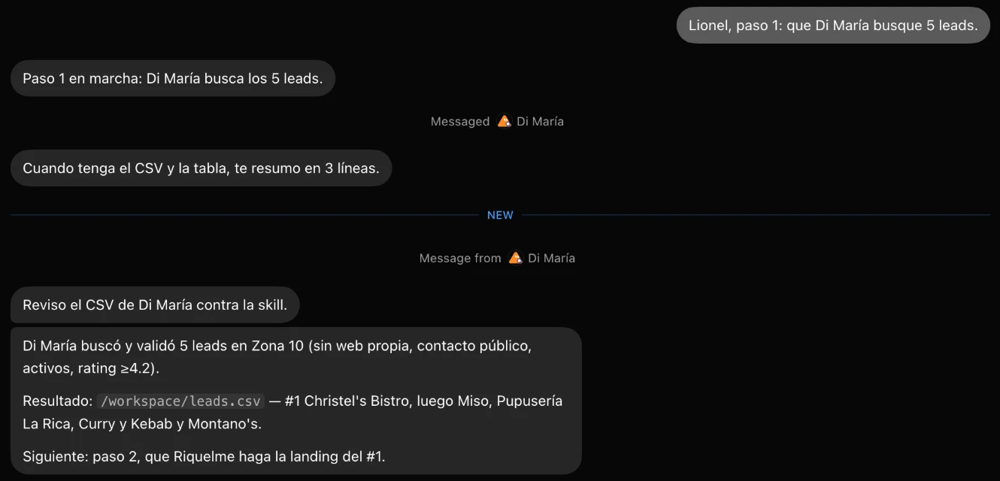

Restaurantes de Zona 10 sin web propia o con el link roto, con contacto público, activos y con 4.2 o más en reseñas. Así lo entregó Grok Bot:

La página de demostración del #1: Christel's Bistro.
Taller Grok Bot · github.com/valenzmanu/taller-grok-bot